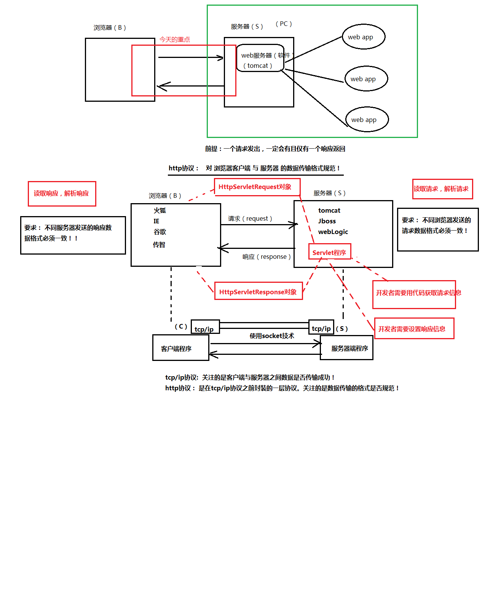
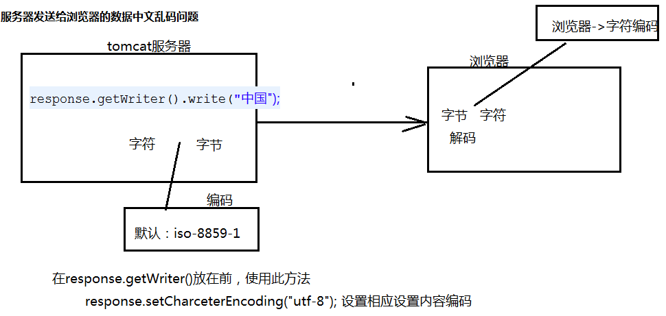
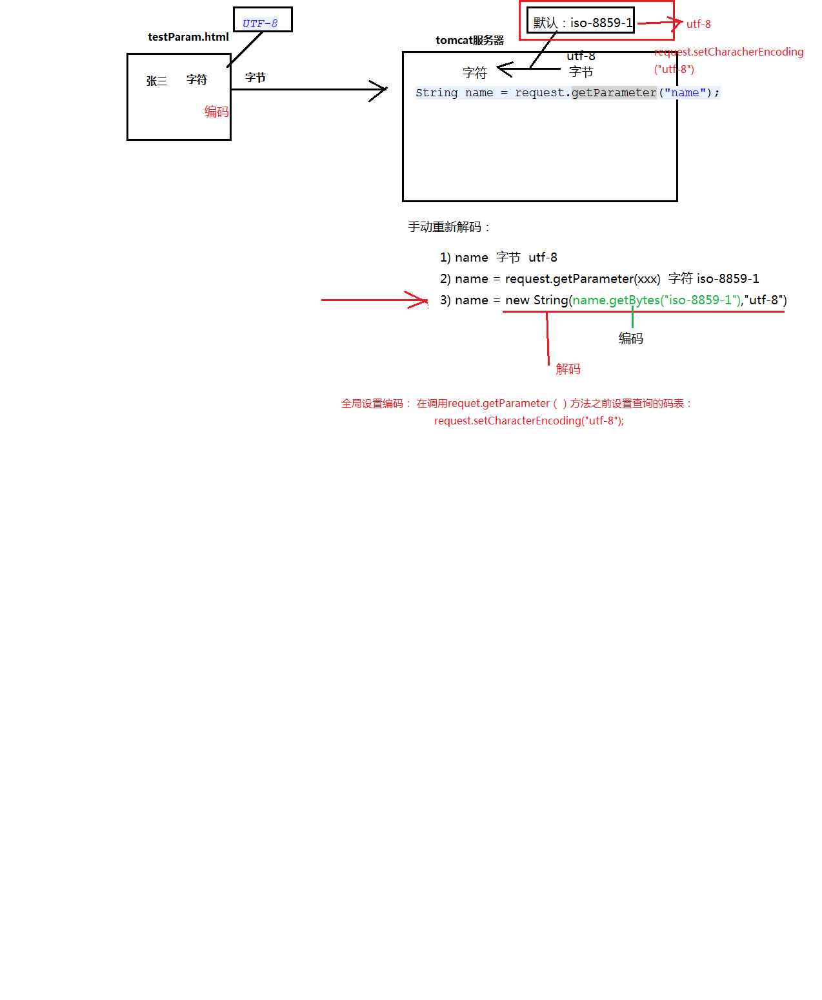
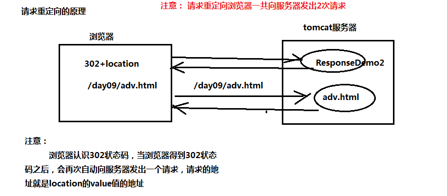
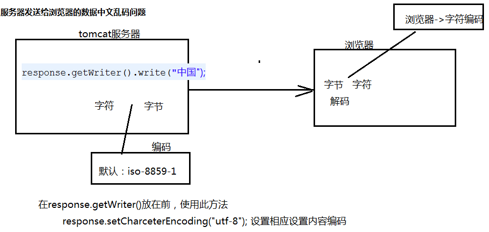
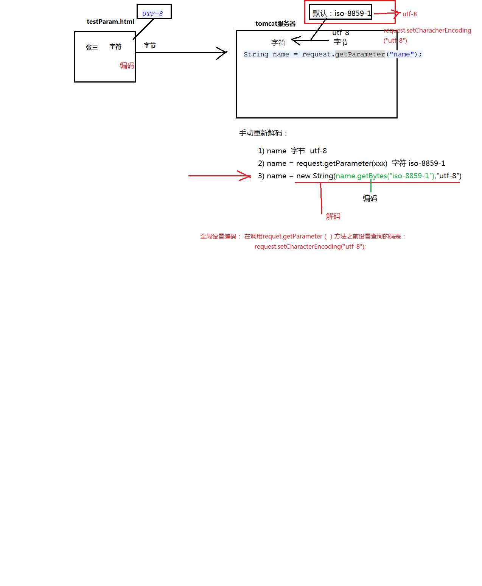
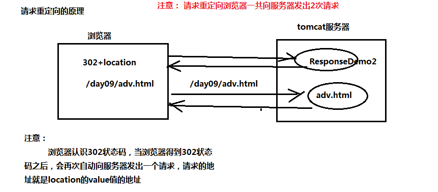
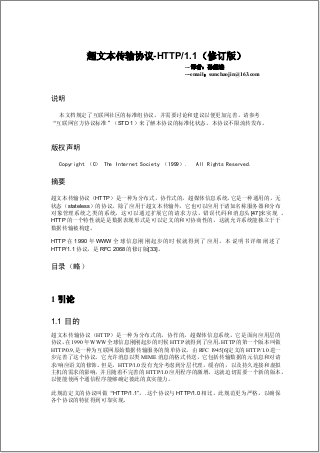

Http协议入门

 
 2.1 什么是http协议
http协议： 对浏览器客户端 和 服务器端 之间数据传输的格式规范
2.2 查看http协议的工具
1）使用火狐的firebug插件（右键->firebug->网络）
2）使用谷歌的“审查元素”
3）使用系统自带的telnet工具（远程访问工具）
a）telnet localhost 8080 访问tomcat服务器
b）ctrl+] 回车 可以看到回显
c）输入请求内容
| GET /day09/hello HTTP/1.1 Host: localhost:8080 |
d）回车，即可查看到服务器响应信息。
2.3 http协议内容
| 请求（浏览器-》服务器） GET /day09/hello HTTP/1.1 Host: localhost:8080 User-Agent: Mozilla/5.0 (Windows NT 6.1; WOW64; rv:35.0) Gecko/20100101 Firefox/35.0 Accept: text/html,application/xhtml+xml,application/xml;q=0.9,*/*;q=0.8 Accept-Language: zh-cn,en-us;q=0.8,zh;q=0.5,en;q=0.3 Accept-Encoding: gzip, deflate Connection: keep-alive |
| 响应（服务器-》浏览器） HTTP/1.1 200 OK Server: Apache-Coyote/1.1 Content-Length: 24 Date: Fri, 30 Jan 2015 01:54:57 GMT this is hello servlet!!! |
3 Http请求
| GET /day09/hello HTTP/1.1 -请求行 Host: localhost:8080 --请求头（多个key-value对象） User-Agent: Mozilla/5.0 (Windows NT 6.1; WOW64; rv:35.0) Gecko/20100101 Firefox/35.0 Accept: text/html,application/xhtml+xml,application/xml;q=0.9,*/*;q=0.8 Accept-Language: zh-cn,en-us;q=0.8,zh;q=0.5,en;q=0.3 Accept-Encoding: gzip, deflate Connection: keep-alive --一个空行 name=eric&password=123456 --（可选）实体内容 |
3.1 请求行
GET /day09/hello HTTP/1.1
#http协议版本
http1.0：当前浏览器客户端与服务器端建立连接之后，只能发送一次请求，一次请求之后连接关闭。
http1.1：当前浏览器客户端与服务器端建立连接之后，可以在一次连接中发送多次请求。（基本都使用1.1）
#请求资源
URL: 统一资源定位符。http://localhost:8080/day09/testImg.html。只能定位互联网资源。是URI 的子集。
URI： 统一资源标记符。/day09/hello。用于标记任何资源。可以是本地文件系统，局域网的资源（//192.168.14.10/myweb/index.html）， 可以是互联网。
#请求方式
常见的请求方式： GET 、 POST、 HEAD、 TRACE、 PUT、 CONNECT 、DELETE
常用的请求方式： GET 和 POST
表单提交：
<form action="提交地址" method="GET/POST">
<form>
GET vs POST 区别
1）GET方式提交
a）地址栏（URI）会跟上参数数据。以？开头，多个参数之间以&分割。
| GET /day09/testMethod.html?name=eric&password=123456 HTTP/1.1 Host: localhost:8080 User-Agent: Mozilla/5.0 (Windows NT 6.1; WOW64; rv:35.0) Gecko/20100101 Firefox/35.0 Accept: text/html,application/xhtml+xml,application/xml;q=0.9,*/*;q=0.8 Accept-Language: zh-cn,en-us;q=0.8,zh;q=0.5,en;q=0.3 Accept-Encoding: gzip, deflate Referer: http://localhost:8080/day09/testMethod.html Connection: keep-alive |
b）GET提交参数数据有限制，不超过1KB。
c）GET方式不适合提交敏感密码。
d）注意： 浏览器直接访问的请求，默认提交方式是GET方式
2）POST方式提交
a）参数不会跟着URI后面。参数而是跟在请求的实体内容中。没有？开头，多个参数之间以&分割。
| POST /day09/testMethod.html HTTP/1.1 Host: localhost:8080 User-Agent: Mozilla/5.0 (Windows NT 6.1; WOW64; rv:35.0) Gecko/20100101 Firefox/35.0 Accept: text/html,application/xhtml+xml,application/xml;q=0.9,*/*;q=0.8 Accept-Language: zh-cn,en-us;q=0.8,zh;q=0.5,en;q=0.3 Accept-Encoding: gzip, deflate Referer: http://localhost:8080/day09/testMethod.html Connection: keep-alive name=eric&password=123456 |
b）POST提交的参数数据没有限制。
c）POST方式提交敏感数据。
3.2 请求头
| Accept: text/html,image/* -- 浏览器接受的数据类型 Accept-Charset: ISO-8859-1 -- 浏览器接受的编码格式 Accept-Encoding: gzip,compress --浏览器接受的数据压缩格式 Accept-Language: en-us,zh- --浏览器接受的语言 Host: www.it315.org:80 --（必须的）当前请求访问的目标地址（主机:端口） If-Modified-Since: Tue, 11 Jul 2000 18:23:51 GMT --浏览器最后的缓存时间 Referer: http://www.it315.org/index.jsp -- 当前请求来自于哪里 User-Agent: Mozilla/4.0 (compatible; MSIE 5.5; Windows NT 5.0) --浏览器类型 Cookie:name=eric -- 浏览器保存的cookie信息 Connection: close/Keep-Alive -- 浏览器跟服务器连接状态。close: 连接关闭 keep-alive：保存连接。 Date: Tue, 11 Jul 2000 18:23:51 GMT -- 请求发出的时间 |
3.3 实体内容
只有POST提交的参数会放到实体内容中
3.4 HttpServletRequest对象
HttpServletRequest对象作用是用于获取请求数据。
核心的API：
请求行：
request.getMethod(); 请求方式
request.getRequetURI() / request.getRequetURL() 请求资源
request.getProtocol() 请求http协议版本
请求头：
request.getHeader("名称") 根据请求头获取请求值
request.getHeaderNames() 获取所有的请求头名称
实体内容:
request.getInputStream() 获取实体内容数据
3.5 service 和 doXX方法区别
| HttpSevlet类的源码： protected void service(HttpServletRequest req, HttpServletResponse resp) throws ServletException, IOException { //得到请求方式 String method = req.getMethod(); if (method.equals(METHOD_GET)) { long lastModified = getLastModified(req); if (lastModified == -1) { // servlet doesn't support if-modified-since, no reason // to go through further expensive logic doGet(req, resp); } else { long ifModifiedSince; try { ifModifiedSince = req.getDateHeader(HEADER_IFMODSINCE); } catch (IllegalArgumentException iae) { // Invalid date header - proceed as if none was set ifModifiedSince = -1; } if (ifModifiedSince < (lastModified / 1000 * 1000)) { // If the servlet mod time is later, call doGet() // Round down to the nearest second for a proper compare // A ifModifiedSince of -1 will always be less maybeSetLastModified(resp, lastModified); doGet(req, resp); } else { resp.setStatus(HttpServletResponse.SC_NOT_MODIFIED); } } } else if (method.equals(METHOD_HEAD)) { long lastModified = getLastModified(req); maybeSetLastModified(resp, lastModified); doHead(req, resp); } else if (method.equals(METHOD_POST)) { doPost(req, resp); } else if (method.equals(METHOD_PUT)) { doPut(req, resp); } else if (method.equals(METHOD_DELETE)) { doDelete(req, resp); } else if (method.equals(METHOD_OPTIONS)) { doOptions(req,resp); } else if (method.equals(METHOD_TRACE)) { doTrace(req,resp); } else { // // Note that this means NO servlet supports whatever // method was requested, anywhere on this server. // String errMsg = lStrings.getString("http.method_not_implemented"); Object[] errArgs = new Object[1]; errArgs[0] = method; errMsg = MessageFormat.format(errMsg, errArgs); resp.sendError(HttpServletResponse.SC_NOT_IMPLEMENTED, errMsg); } } |
3.6 案例-获取浏览器的类型（user-agent）
3.7 案例- 防止非法链接(referer)
第1次 CSDN/51CTO -> 页面(点击下载) -> 弹出广告页面（点击此处下载） -> 开始下载
第2次 直接点击此处下载 -> 转回广告页面 -> 开始下载
非法链接：
1）直接访问下载的资源
2）不是从广告页面过来的链接
referer： 当前请求来自于哪里。
3.8 传递的请求参数如何获取
GET方式： 参数放在URI后面
POST方式： 参数放在实体内容中
获取GET方式参数：
request.getQueryString();
获取POST方式参数：
request.getInputStream();
问题：但是以上两种不通用，而且获取到的参数还需要进一步地解析。
所以可以使用统一方便的获取参数的方式：
核心的API：
request.getParameter("参数名"); 根据参数名获取参数值（注意，只能获取一个值的参数）
request.getParameterValue("参数名“)；根据参数名获取参数值（可以获取多个值的参数）
request.getParameterNames(); 获取所有参数名称列表
3.9 请求参数编码问题
修改POST方式参数编码：
request.setCharacterEncoding("utf-8");
修改GET方式参数编码：
手动解码：String name = new String(name.getBytes("iso-8859-1"),"utf-8");
4 Http响应
| HTTP/1.1 200 OK --响应行 Server: Apache-Coyote/1.1 --响应头（key-vaule） Content-Length: 24 Date: Fri, 30 Jan 2015 01:54:57 GMT --一个空行 this is hello servlet!!! --实体内容 |
4.1 响应行
#http协议版本
#状态码: 服务器处理请求的结果（状态）
常见的状态：
200 ： 表示请求处理完成并完美返回
302： 表示请求需要进一步细化。
404： 表示客户访问的资源找不到。
404： 表示客户访问的资源找不到。
500： 表示服务器的资源发送错误。（服务器内部错误）
#状态描述
4.2 常见的响应头
| Location: http://www.it315.org/index.jsp -表示重定向的地址，该头和302的状态码一起使用。 Server:apache tomcat ---表示服务器的类型 Content-Encoding: gzip -- 表示服务器发送给浏览器的数据压缩类型 Content-Length: 80 --表示服务器发送给浏览器的数据长度 Content-Language: zh-cn --表示服务器支持的语言 Content-Type: text/html; charset=GB2312 --表示服务器发送给浏览器的数据类型及内容编码 Last-Modified: Tue, 11 Jul 2000 18:23:51 GMT --表示服务器资源的最后修改时间 Refresh: 1;url=http://www.it315.org --表示定时刷新 Content-Disposition: attachment; filename=aaa.zip --表示告诉浏览器以下载方式打开资源（下载文件时用到） Transfer-Encoding: chunked Set-Cookie:SS=Q0=5Lb_nQ; path=/search --表示服务器发送给浏览器的cookie信息（会话管理用到） Expires: -1 --表示通知浏览器不进行缓存 Cache-Control: no-cache Pragma: no-cache Connection: close/Keep-Alive --表示服务器和浏览器的连接状态。close：关闭连接 keep-alive:保存连接 |
4.3 HttpServletResponse对象
HttpServletResponse对象修改响应信息：
响应行：
response.setStatus() 设置状态码
响应头：
response.setHeader("name","value") 设置响应头
实体内容：
response.getWriter().writer(); 发送字符实体内容
response.getOutputStream().writer() 发送字节实体内容
4.4 案例- 请求重定向（Location）
4.5 案例- 定时刷新(refresh)
4.6 案例-content-Type作用
总结：
http协议： 浏览器和服务器之间数据传输的格式规范
1）http请求：
格式：
请求行
请求头
空行
实体内容（POST提交的数据在实体内容中）
重点： 使用HttpServl 对象： 获取请求数据
2）http响应;
格式：
响应行
响应头
空行
实体内容（浏览器看到的内容）
重点：
使用HttpServletResponse对象： 设置响应数据